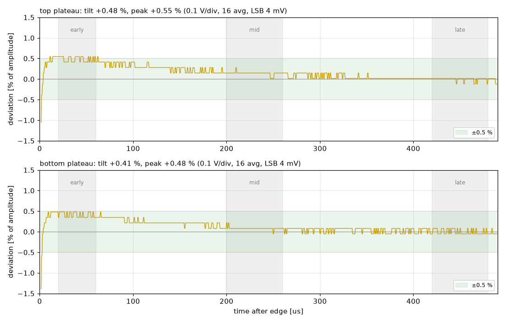

rigol-ds1000z
RIGOL DS1000Z シリーズ（DS1054Z / DS1104Z など）を LAN から高速に制御・計測する Python ライブラリです。REST・WebSocket API と、LLM が自然言語の指示で計測からレポート作成まで行える MCP サーバーも含みます。
できること
Python ライブラリ
生 SCPI ソケットで制御します。VISA や公式 SDK は不要です。実機で調べた癖に合わせ、冗長なコマンドを送らないようにしています。
REST / WebSocket
FastAPI で設定変更・波形取得・スクリーンショットができます。新しいフレームをブラウザのライブビューアへ push します。
LLM 連携（MCP）
「これを測ってレポートにして」といった指示で、設定・取得・解析・HTML レポート作成まで LLM が実行します。
サンプル: プローブ補正の評価

CH1 テスト信号の多スケール計測とプローブ補正評価
1 kHz の方形波を、垂直 4 段階・時間軸 9 条件で取り込みました。平坦部を 0.1 V/div まで拡大して 16 回平均し、補正状態を定量的に判定しています。結果は傾き +0.48 % / +0.41 % で、ごく軽い過補償寄りの「良好」でした。
レポートを開く実測パフォーマンス
| 操作（DS1104Z、USB-LAN 100 Mbps 直結） | 実測 |
|---|---|
| 1ch の画面波形（1200 点） | 3.2 ms（約 300 回/s） |
| 1ch の新しいフレーム（本体の画面更新が上限） | 約 12 回/s |
| 4ch を同じ瞬間に揃えて取得 | 約 280 ms |
| メモリ全体の 24M 点 | 16.6 s |
| 本体の自動測定（キャッシュされている 5 項目以内） | 約 3 ms |
使い方
uv venv --python 3.12 .venv
uv pip install --python .venv/bin/python -e ".[all]"
.venv/bin/rigol-ds discover # LAN 上のオシロを探す
.venv/bin/rigol-ds serve # REST API + ライブビューア
.venv/bin/rigol-ds mcp # LLM 用 MCP サーバー（stdio）